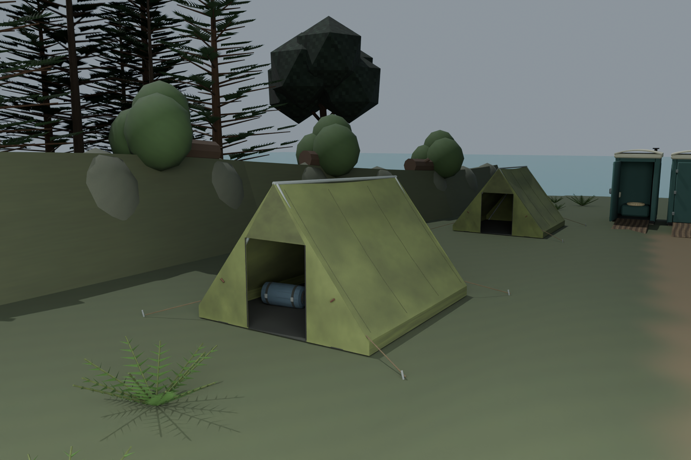
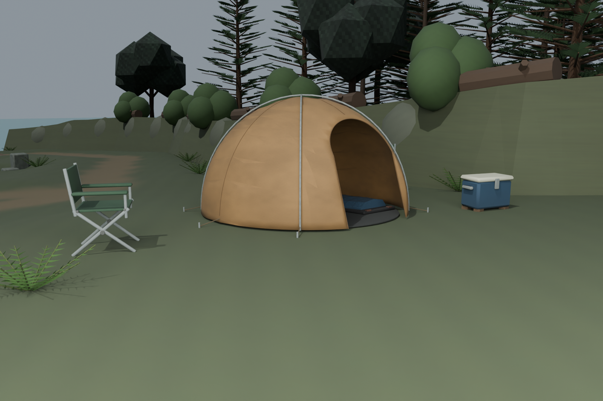
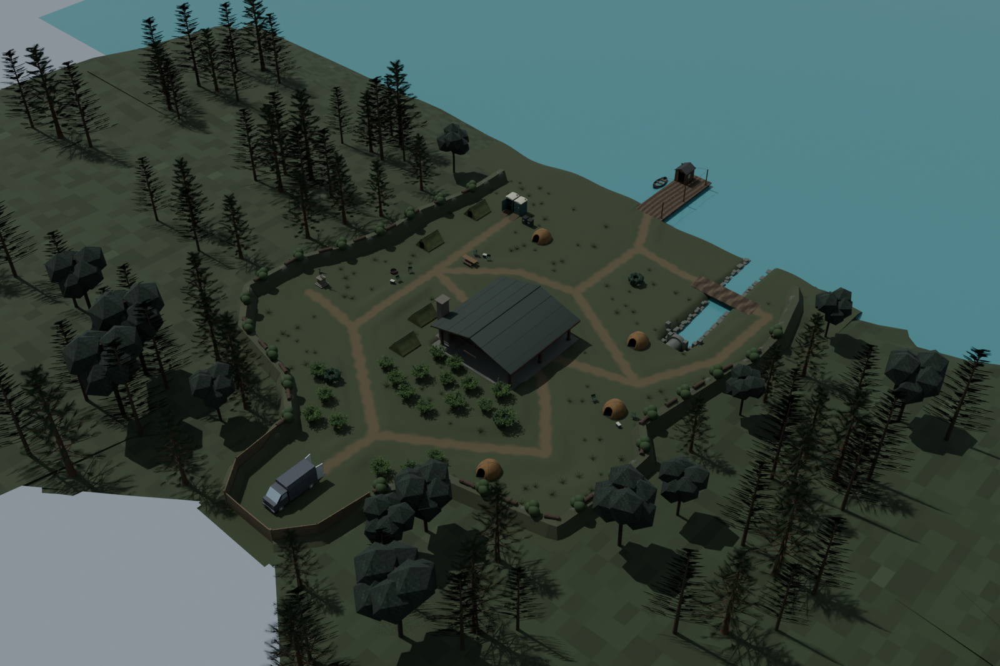
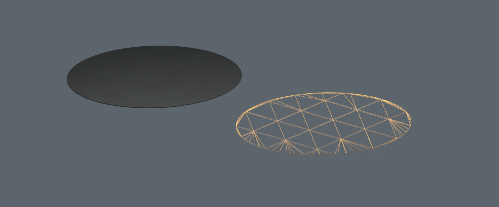
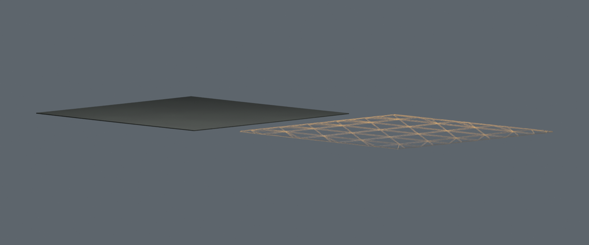
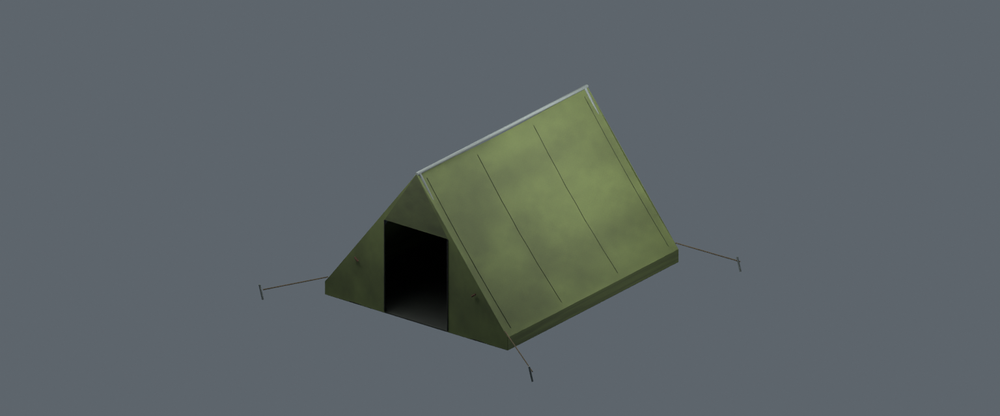
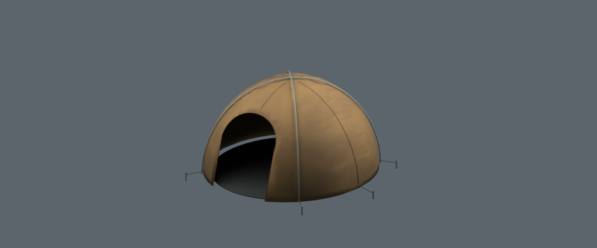
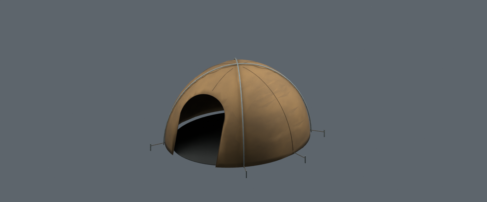
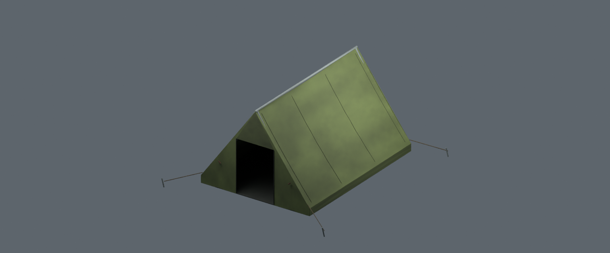
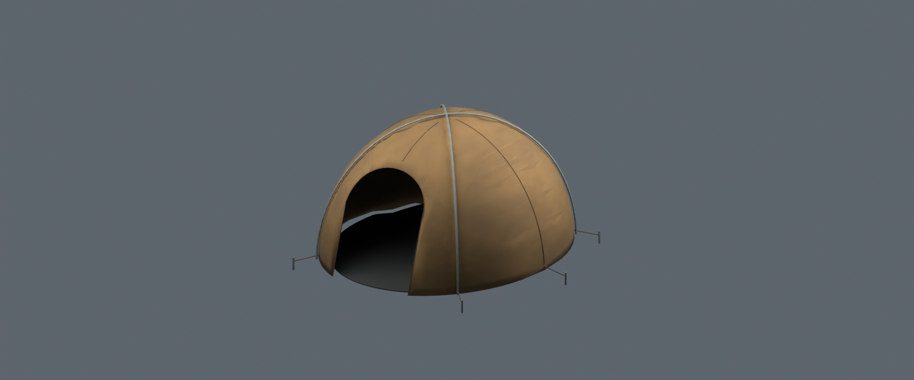

Latest native review: organic memorial, ground/shore materials, rocks and varied tent headings
24 October2026 · Terrain-clipped tent floors and fitted assemblies
Eight floors now follow the actual terrain triangles instead of dense uniform subdivisions. Floor triangles fall from465696 to2788. Explicit12mm vertical depth, the original rectangular/oval footprints and top-surface material mapping remain. Eight complete terrain-fitted tent assemblies are exported for game integration; the current map remains locked.
Left: previous tailored source. Right: current fitted geometry. Canvas, poles, anchors, bedding, all poses, terrain, van and other site meshes retain their rendered geometry.




These isolated copies show the actual shaded floor and a gold mesh-edge diagnostic beside it. Gold lines are inspection graphics, not the in-game material. No floor is replaced with a flat pad.


Each keeps its original local pivot. The placement packet supplies the exact existing location, yaw and scale. Source and GLB oriented triangle sets compare exactly, including explicit rendered fabric diagonals.
| Native instance | Floor triangles before → after | Complete export |
|---|---|---|
| west-pitched-ridge | 5292 → 244 | 6392 triangles · editable · GLB |
| east-pitched-dome | 111132 → 432 | 7716 triangles · editable · GLB |
| Additional pitched tent 1 | 5292 → 264 | 6412 triangles · editable · GLB |
| Additional pitched tent 2 | 111132 → 432 | 7716 triangles · editable · GLB |
| Additional pitched tent 3 | 5292 → 264 | 6412 triangles · editable · GLB |
| Additional pitched tent 4 | 111132 → 436 | 7720 triangles · editable · GLB |
| Additional pitched tent 5 | 5292 → 280 | 6428 triangles · editable · GLB |
| Additional pitched tent 6 | 111132 → 436 | 7720 triangles · editable · GLB |





50776 independent actual terrain/floor rays confirm top at ground+28mm, underside at ground+16mm and closed edges. Maximum observed support offset error: 3.067µm. Top UV mapping is checked against the previous actual floor triangles. All795 unrelated meshes/UVs/poses and every nonfloor rendered triangle/UV remain unchanged.72 positive roof/floor checks and21 bedding-contact checks pass.
Existing protected routes, crouch entries, rituals, sanitary ramps, source barriers and culvert sight checks pass after the change. Eight actual GLB reimports and exact raw oriented triangle identity checks pass within unchanged50k/4MB per-asset limits;56516 triangles combined. The game reader passes3744 independent material UV/PNG pixel checks. Native render-visible geometry is1037502 triangles, down from1500410; runtime FPS has not been measured.
These are native/model captures and source geometry checks. Actual world renderer/collision/circuit/ghost/host/LAN integration, water layering, human/LOD/performance and final story/physics/Easter-egg gates remain open. Pending older physics export must be regenerated from this scene before integration. Existing broad CI equipment-count and vehicle-color assertions remain separately open (DEV-069/060). No mission is unlocked here.
Current native scene · Fitted assets/placements · Independent floor/source checks · Native fit checks · Previous fabric pass · Shared gallery